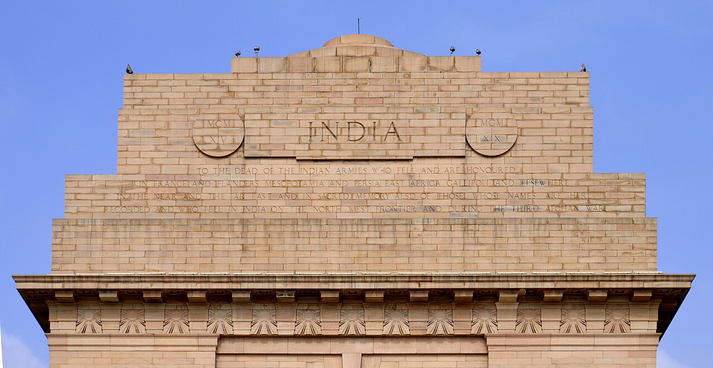

Geopolitics · Regionalism
From SAARC to BIMSTEC: India's Search for a Region
For all its shared history, South Asia trades with itself less than almost any region on earth. The story of why is the story of two organisations — the stalled SAARC and the rising BIMSTEC — and India's search for a neighbourhood that actually works together.
The promise of SAARC
Founded in 1985, the South Asian Association for Regional Cooperation was meant to knit the subcontinent together. Instead it became hostage to the India–Pakistan rivalry: when those two cannot agree, the whole body freezes.[1]
A grouping built on consensus cannot function when its two largest members will not sit together.
The paralysis

Summits were cancelled, agreements stalled, and SAARC slid into dormancy after 2016. A grouping built on consensus could not function when its two largest members would not sit together.
The pivot to BIMSTEC
India shifted energy to BIMSTEC — linking the Bay of Bengal economies of South and Southeast Asia, and pointedly excluding Pakistan. It connects naturally with the Act East agenda and offers a path around the old deadlock.
The limits
BIMSTEC is younger, under-resourced, and slow. But it offers something SAARC could not: a forum where progress does not depend on the subcontinent's most poisoned relationship.
Why it matters
Regional integration multiplies prosperity and influence. India's struggle to build a working bloc shows both the cost of the Pakistan rivalry and the creativity of looking for new partners when old structures fail.
Sources & further reading
- "SAARC" and "BIMSTEC," Wikipedia.
All images via Wikimedia Commons, used under the licences shown on each file page.